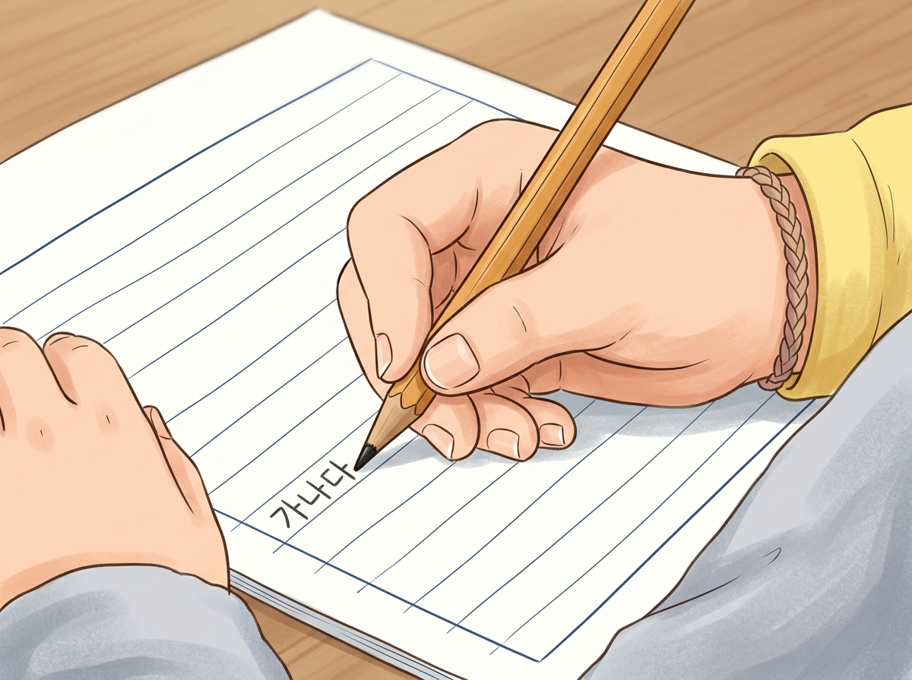
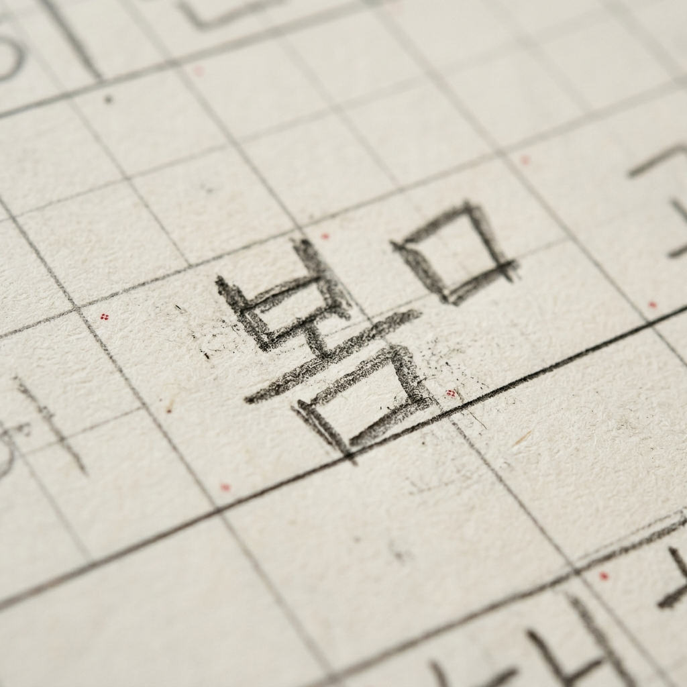
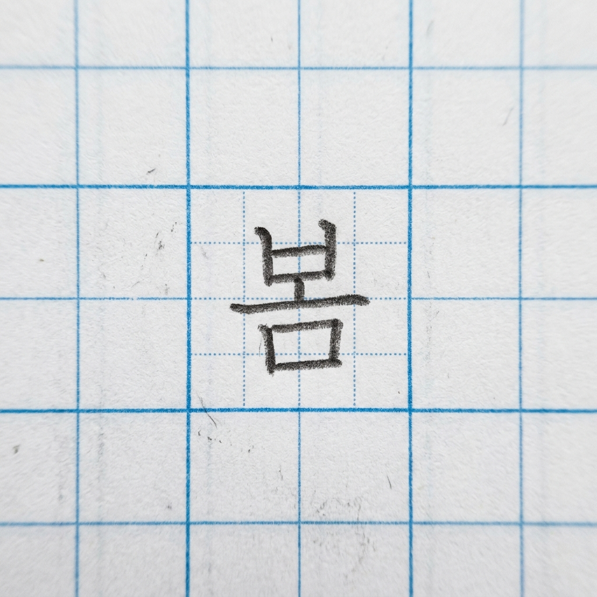
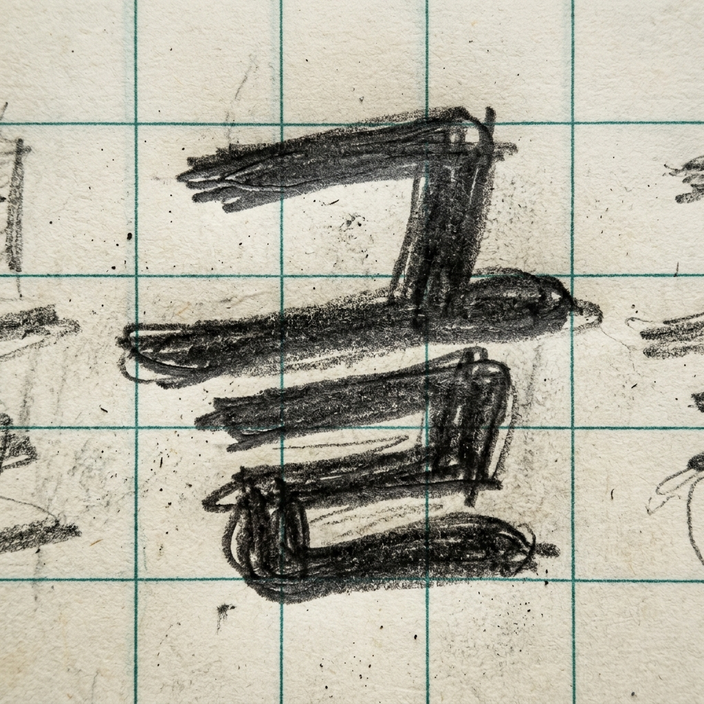
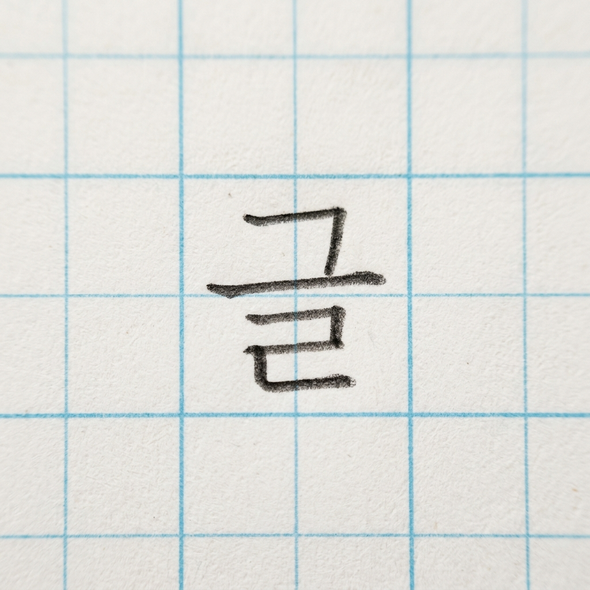
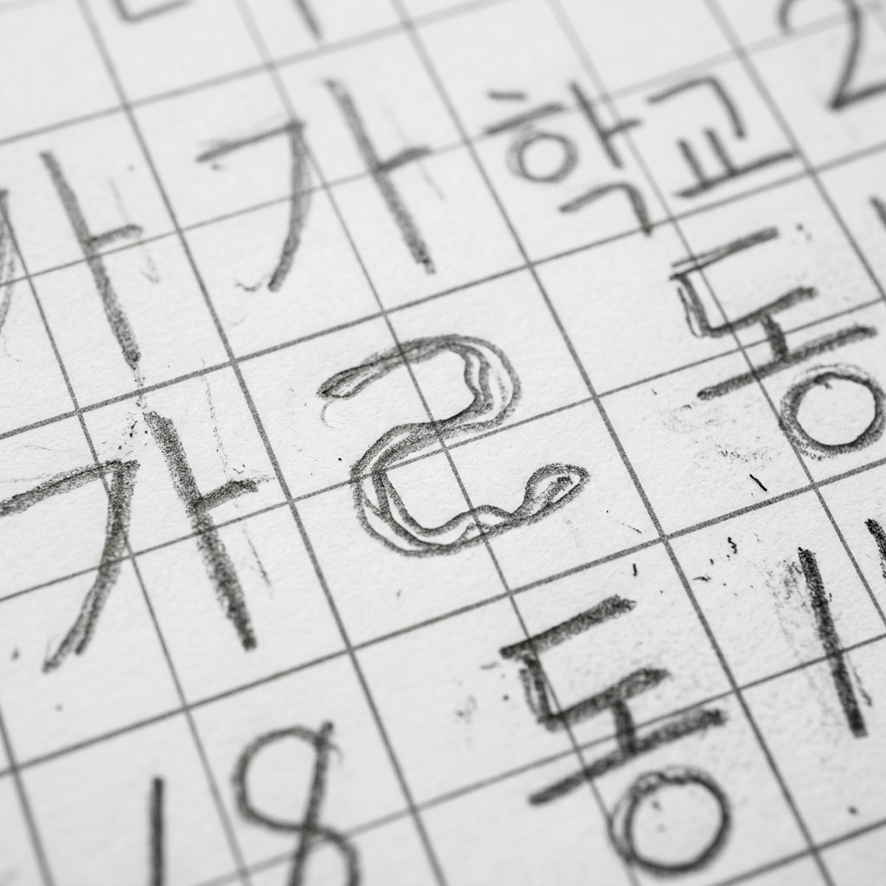
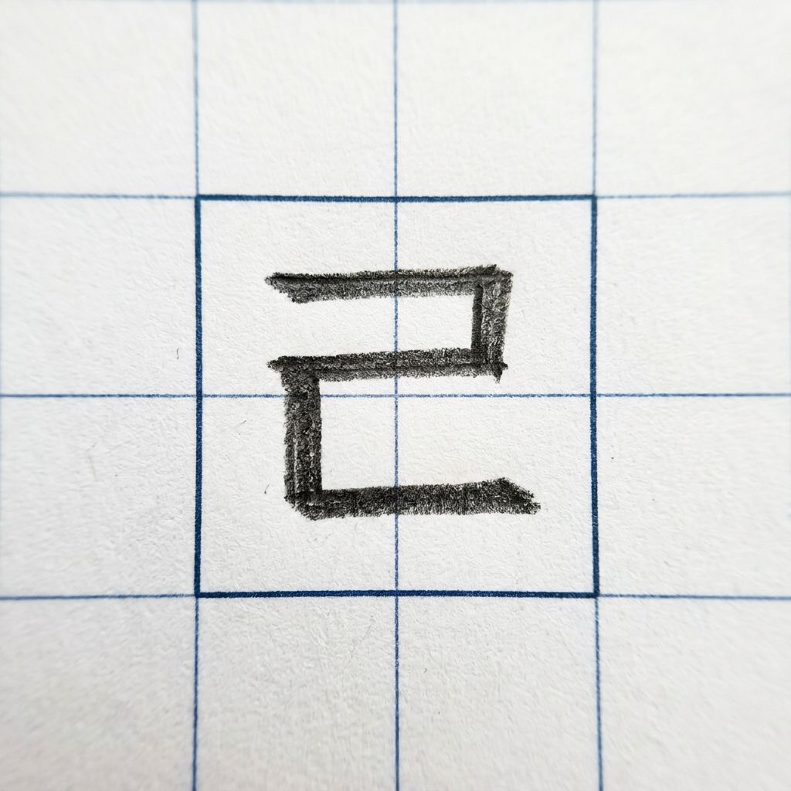
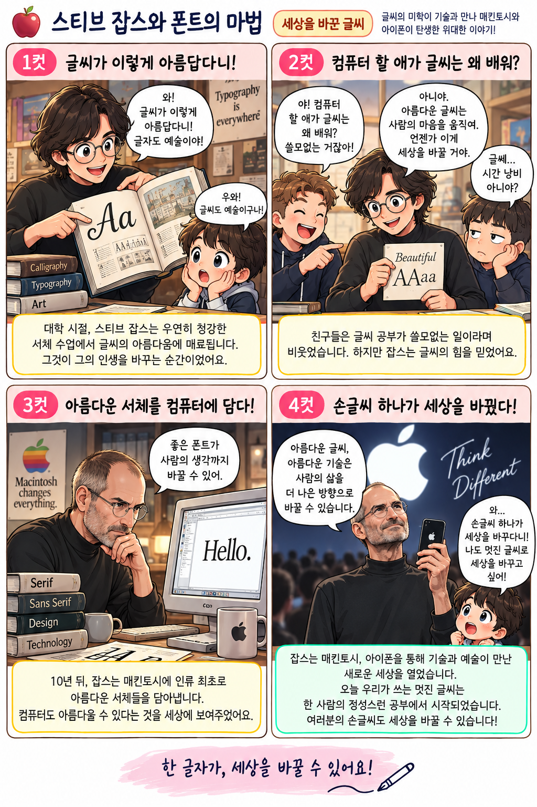

손글씨 사진을 추가해 주세요
모눈종이 격자가 잘 보이게, 위에서 반듯하게 찍어 주세요.
연속 기록
0일
이번 달 기록
0개
누적 기록
0개
방안지 출력
필사할 문장과 출처를 함께 담아 5mm 모눈 방안지를 인쇄해요.
아직 채점 결과가 없어요.
촬영·채점 탭에서 손글씨를 채점해 보세요!
모눈 칸 75% 안전구역과 1mm 기준선
핵심 비법 1
칸을 100% 꽉 채우지 말고, 아래는 살짝 띄워야 글씨가 시원해요!
75% 채우기: 칸에 100% 꽉 채우면 글씨가 답답해서 뭉개져요. 사방에 숨 쉴 틈을 남겨주세요!
1mm 기준선 띄우기: 바닥 선에 글씨가 닿지 않고 살짝 1mm 떠 있어야 줄이 처지지 않아요!
받침 있는 글자는 6 : 4 황금 비율
핵심 비법 2
받침이 너무 크면 뚱뚱해지고, 너무 작으면 넘어져요!
윗부분(초성+모음)을 넉넉하게 60% 쓰고, 받침은 40%로 아랫목을 든든하게 받쳐주세요.
받침의 가로 중심이 글자 전체의 가운데 기둥과 정확히 수평 대칭을 이루어야 흔들리지 않아요!
자간 1mm & 띄어쓰기 모눈 1칸(5mm)
핵심 비법 3
글자 사이는 바늘 한 땀! 낱말 사이는 모눈 한 칸을 통째로 비워요!
단어 속 글자 사이는 바늘 한 땀(1mm)처럼 좁게 바짝 붙여 쓰세요.
단어와 단어 사이는 모눈 한 칸(5mm)을 통째로 뻥! 비워야 읽기 쉬워요.
1. 마름모꼴 (세로모임 민글자)
다이아몬드 조형틀
"가, 나, 다, 라, 하"처럼 받침 없는 세로모임은 마름모틀에 쏙!
세로모음 민글자는 마름모꼴: '가, 나, 다, 라, 마, 바, 사, 하' 등은 네모를 꽉 채우려 하지 말고, 위아래와 좌우 꼭짓점이 다이아몬드를 이루도록 쓰면 글씨가 매우 날렵하고 수려해집니다.
세로 모음의 상하 관통: 모음 'ㅏ, ㅓ, ㅣ'의 세로 기둥선이 상하 꼭짓점을 든든히 지키고, 초성 자음은 마름모의 왼쪽 날개 중심에 쏙 안착시켜 주세요.
2. 직사각형꼴 (받침 있는 2층·3층 글자)
듬직한 네모틀
"달, 밥, 봄, 국, 꽃"처럼 받침이 있는 글자는 듬직한 직사각형 2층 집!
받침 글자는 단단한 직사각형틀: 받침이 있는 글자는 상하·좌우가 꽉 찬 벽돌처럼 안정된 직사각형 외곽선을 형성해야 전체 문장이 울퉁불퉁하지 않습니다.
6:4 황금 층 분할: 윗집 60%와 받침 아랫집 40%의 수평 지탱선이 모눈 칸의 직사각형 프레임 안에 가지런히 안착하도록 정돈해 주세요.
3. 세모꼴 / 사다리꼴 (가로모임 민글자)
피라미드 조형틀
"고, 노, 도, 모, 소, 오"처럼 가로모임은 피라미드처럼 아래를 넓게!
가로모임은 피라미드 삼각틀: 'ㅗ, ㅛ, ㅜ, ㅠ, ㅡ'와 결합하는 글자는 위쪽 자음을 단단하게 모으고, 아래 가로획을 밑변처럼 시원하고 넓게 뻗어 피라미드 삼각 구도를 만듭니다.
흔들리지 않는 주춧돌: 가로선이 초성보다 짧으면 글씨가 위태롭게 넘어져요. 바닥을 든든하게 받쳐주는 느낌으로 활짝 열어주세요.
4. 오각형꼴 (복합모임/섞임글자)
포근한 집 조형틀
"와, 왜, 위, 의, 화"처럼 복합모임은 모음이 자음을 포근히 감싸요!
복합모음은 포근한 오각형틀: '와, 왜, 웨, 위, 의, 귀, 화'는 자음이 가로모음과 세로모음의 안쪽 둥지에 포근하게 안기는 오각형 집 모양 구조입니다.
초성의 콤팩트한 안착: 자음이 너무 크면 모음 바깥으로 삐져나가 글씨가 거대해집니다. 자음은 아담하게 안쪽에 품고, 모음이 지붕과 울타리가 되어주세요.
엄지·검지·중지 3점 지지법
바른 손모양
엄지와 검지는 둥글게 모으고, 중지는 아래에서 든든하게 받쳐요!

심에서 2.5cm 위: 너무 아래를 쥐면 내가 쓴 글씨가 손에 가려져 고개가 비뚤어져요. 손가락 두 마디 위를 잡아요.
O자 모양 모으기: 엄지가 검지를 덮어 누르면 손가락이 아파요. 엄지와 검지로 부드러운 O자를 만들어요.
연필 각도 45°~60° & 손안의 달걀
각도와 힘 빼기
연필은 세우지 말고 비스듬히 눕히고, 손목에 힘을 30% 빼요!
연필 각도 45°~60°: 연필을 90도로 바짝 세우면 종이가 긁히고 획이 굳어져요. 비스듬히 눕혀서 쓰세요.
손안의 달걀: 손바닥 안에 동그란 달걀 하나가 들어있는 느낌으로 쥐면 손에 피로가 없어요!
1. 칸 안에 글자 큼직하고 당당하게 쓰기
기백의 원리
"크게 쓸 수 있는 사람이 작게도 잘 쓸 수 있습니다!"
소심하게 모눈 구석에 웅크리지 말고, 칸을 시원하고 당당하게 채우는 연습을 해야 글씨에 힘이 붙고 손가락 근육이 발달합니다!
2. 모음 기둥선 시원하게 쭉 뻗기
글자의 척추
모음은 글자의 중심 뼈대! 아래와 오른쪽으로 길고 빳빳하게 뻗어요.
'ㅏ, ㅓ, ㅣ'의 세로선은 아래로 곧게 뻗고, 'ㅗ, ㅜ, ㅡ'의 가로선은 바닥을 든든히 지탱하듯 넓게 뻗어주세요!
3. 높이들을 가상의 지붕선에 맞추기
수평 정렬
보이지 않는 하늘 지붕선에 글자 머리를 나란히 안착시켜요!
어떤 글자는 크고 어떤 글자는 작게 들쑥날쑥하지 않도록, 글자의 윗머리와 중심 높이를 가상의 선에 딱! 맞춰 쓰세요.
4. 또박또박이 되면 '삐침' 멋내기
2단계 레벨업
정직한 정자체가 손에 익으면 붓글씨의 날렵한 삐침으로 레벨업!
처음부터 흘려 쓰면 글씨가 망가져요. 또박또박 획을 멈추는 법이 완벽해지면, 그때 끝을 날렵하게 삐쳐 멋을 냅니다!
5. 마음의 소리와 진심을 다해 쓰기
글씨의 영혼
글씨는 나의 마음을 비추는 거울! 단어마다 따뜻한 숨결을 담아요.
숙제를 빨리 끝내려고 날려 쓰지 마세요. 좋은 글귀의 뜻을 가슴으로 느끼며 정성껏 쓸 때 나의 인격도 쑥쑥 자라납니다.
1~3 핵심 평가 지표
전반부 3대 지표
글씨의 안정감을 결정하는 가장 중요한 기초 뼈대예요!
1. 기준선
───
글자 밑선이 파도를 타지 않고 보이지 않는 자를 댄 듯 수평!
2. 자모 짜임새
자음과 모음이 너무 멀어지지 않게 자석처럼 오순도순 결합!
3. 크기 일관성
대장 글씨와 꼬마 글씨가 섞이지 않게 비슷한 크기 유지!
4~6 핵심 평가 지표
후반부 3대 지표
글씨의 완성도와 가독성을 결정하는 고급 지표예요!
4. 받침 균형
받침이 한쪽으로 쏠리지 않고 정중앙에서 시소 수평 맞추기!
5. 정렬과 자간
일정한 보폭으로 걷듯 글자 사이 간격을 균일하게!
6. 가독성
획을 뭉개지 말고 모서리 꺾임과 끝맺음을 또박또박!
실제 지렁이 필적 데이터 정밀 분석기
데이터 시뮬레이터
초등학생이 쓴 실제 삐뚤빼뚤 획의 지렁이 필적 데이터와 바른 표준 정자체 데이터를 실시간 계측 비교합니다.
기준선 각도
+14.8° (날아감)
획 떨림 지수
8.4px (심한 떨림)
모서리 곡률
142° (직각 상실)
지렁이 글씨 분석: 손목과 손가락 힘 조절이 안 되어 기준선이 14.8도 치솟고 모서리가 지렁이처럼 둥글게 뭉개졌습니다.
1. 글씨가 오른쪽 위로 날아갈 때
비행기 글씨
어디가 잘못되었는지 빨간 ✕ 와 초록 ✔ 를 비교해 보세요!
비행기 글씨

↗ 기준선이 위로 붕 뜨고 날아감
바른 글씨

→ 가로선과 평행하게 안착됨
처방: 팔꿈치를 몸에 너무 붙이지 말고 책상에 편안히 둔 뒤, 첫 획의 수평을 의식하세요.
2. 칸에 100% 꽉 차서 숨 막힐 때
만두 글씨
칸 밖으로 삐져나오고 답답한 글씨를 시원하게 교정해요!
꽉 찬 글씨

칸 밖으로 삐져나오고 답답함
75% 안전구역

사방 여백이 있어 시원하고 단정함
처방: 모눈 칸 벽에 닿지 않도록 연필심 두께만큼 안쪽으로 들어와서 쓰세요.
3. 'ㄹ', 'ㅁ', 'ㅂ' 획이 둥글게 뭉개질 때
둥근 모서리
꺾는 모서리마다 0.1초 멈춤으로 직각의 각을 세워요!
지렁이 획

휘갈겨 써서 모서리가 둥글게 풀림
직각 꺾임

꺾는 모서리마다 0.1초 멈춤!
처방: 한 번에 흘려 쓰지 말고 획순에 맞춰 꺾이는 곳에서 살짝 멈췄다가 방향을 틀어요!
1화. 스티브 잡스와 폰트의 마법
세상을 바꾼 글씨
글씨의 미학이 기술과 만나 매킨토시와 아이폰이 탄생한 위대한 이야기!

터치하면 크게 볼 수 있어요!
한 글자가, 세상을 바꿀 수 있어요!
잡스는 매킨토시와 아이폰을 통해 기술과 예술이 만난 아름다운 세상을 열었습니다. 오늘 여러분이 공책에 정성껏 쓰는 글씨 한 자도 여러분의 미래를 바꿀 수 있습니다!
3화. 글씨를 차분하게 쓰면 마음도 맑아집니다!
마음의 치유
글씨를 차분하게 쓰면 어지럽던 내 마음도 마법처럼 맑아집니다!
터치하면 크게 볼 수 있어요!
바른 글씨는 나의 당당한 얼굴!
마음이 화나고 급하면 글씨도 지렁이처럼 날아갑니다. 연필을 잠시 내려놓고 후~ 심호흡한 뒤 정성을 다하면 내 마음도 호수처럼 단단하고 맑아집니다!
오늘의 명예의 전당
AI 채점 엔진 설정
원하시는 AI 공급자를 선택하거나 API 키를 입력해 주세요.
Google Gemini
Claude Sonnet
OpenAI GPT
태블릿 및 학교 환경 권장: Google Gemini 키(AIza...) 또는 Anthropic 키를 권장합니다. OpenAI 키는 브라우저 직접 호출 제한(CORS)으로 일부 환경에서 실패할 수 있습니다.
앱 정보 및 팁
· 버전: v2.0 (App-Fit UI & 필사 지도 강화판)
· 채점 기준: 기준선, 자모 짜임새, 크기 일관성, 받침 균형, 정렬과 자간, 가독성
· 저장 위치: 설정 및 랭킹 데이터는 브라우저 내부 로컬스토리지에 안전하게 보관됩니다.
· 강의 및 감수: 정세훈